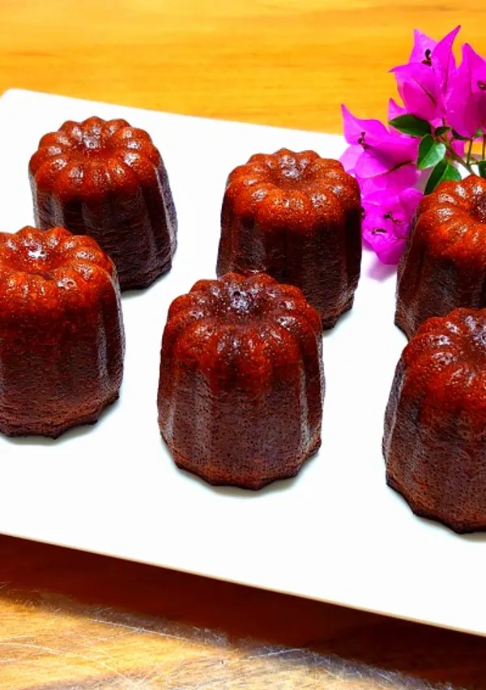
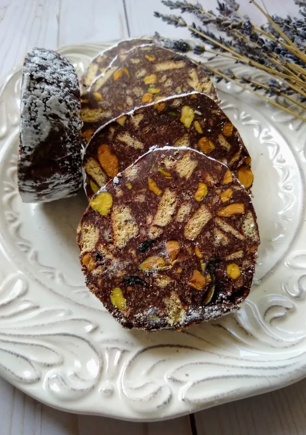
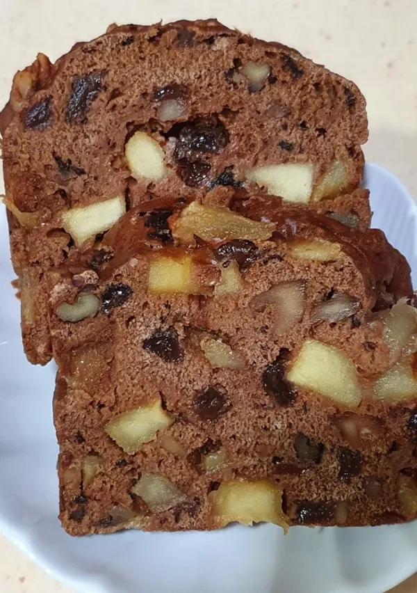
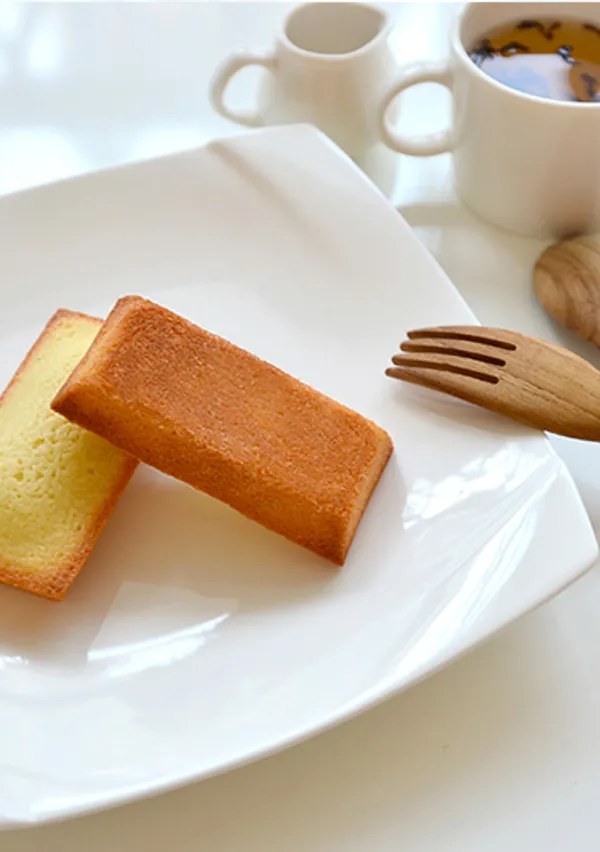

法式巧克力醬糜蛋糕
95元
Terrine 在法式料理中原本是指一種用陶製長方模具製作的凍派或肉醬凍，後來延伸到甜點領域，用來指代一種外型與法式肉醬凍相似、口感極為濃郁紮實的甜點。口感介於布朗尼和生巧克力之間的極致巧克力甜點。
可麗露

95元
可麗露 (Canelé)，全名為Canelé de Bordeaux，是源自法國西南部波爾多地區的經典修道院甜點。因其特殊的造型和口感對比，在台灣常被暱稱為「天使之鈴」或「天使之冠」。
義式巧克力香腸

95元
義式巧克力香腸 (Salame di Cioccolato) 是一種源自義大利的經典甜點，並非真正的肉製品，而是因為其外形酷似義大利臘腸而得名。這是一種免烤甜點，製作過程簡單，口感豐富且充滿趣味。
蘋果肉桂捲

85元
蘋果肉桂捲是在經典肉桂捲的基礎上進行的美味創新，將煮軟的蘋果切塊或蘋果泥融入到肉桂捲的內餡中，使得傳統肉桂捲的風味更加濕潤、清爽且充滿果香。
費南雪

90元
費南雪 (Financier) 是一種經典的法式常溫小蛋糕，以其獨特的金磚造型、濕潤的口感和濃郁的堅果香氣而聞名。名字來自於它與金條相似的長方形外觀，以及在巴黎金融區受歡迎的歷史。